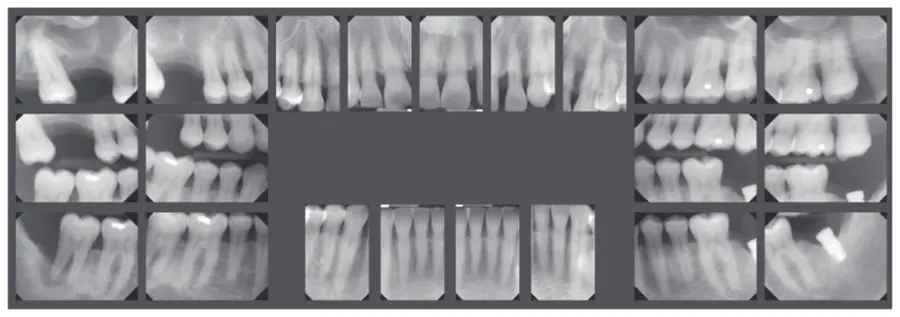
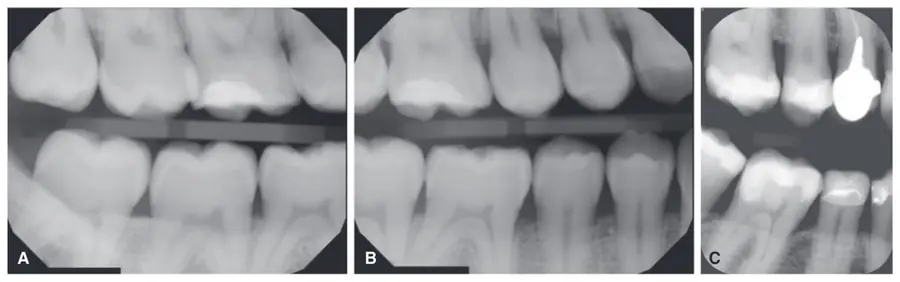

نسخه استخراجشده؛ ترجمه یا تأیید علمی انجام نشده است. وضعیت: captured
با یک انتقاد صریح شروع کنیم: «متأسفانه برخی دندانپزشکان از تصویربرداری بهعنوان میانبُری بهجای صرف وقت برای گرفتن تاریخچهی جامع بیمار یا انجام معاینهی بالینی کامل استفاده میکنند.»

و ترتیب درست چیست؟ «معاینهی تصویربرداری باید از یافتههای تاریخچهی پزشکی و دندانی، نمای بالینی، و نتایج معاینهی فیزیکی آگاه شود و در نهایت بر پایهی آنها طراحی گردد.» و یک نقش دیگر هم دارد: «وقتی ارزیابیهای تشخیصی دیگر نتایج مبهم یا دوپهلو بدهند، تصویربرداری ممکن است برای پشتیبانی یا رد آن نتایج لازم شود.»
و مثال هرکدام روشنگر است: در موقعیت نخست، «بیماری ممکن است یک تورم سخت در ناحیهی پرمولر مندیبل با گسترش سطوح باکال و لینگوال» داشته باشد. در موقعیت دوم، «بیماری ممکن است پس از سالها ندیدن دندانپزشک مراجعه کند، هرچند معاینه هیچ شواهدی از پوسیدگی نشان ندهد» — و «چون بیمار سالهاست بایتوینگ نداشته، معقول است فرض کنیم سود بالقوهای در کشف پوسیدگی بیندندانی هست که بالینی مشهود یا با روشهای دیگر قابل کشف نیست».
و تعریفشان: «معیارهای انتخابی که بخشی از راهنمای FDA و ADAاند، یافتههای بالینی را توصیف میکنند که میتوانند از تصویربرداری تشخیصی سود ببرند.» و «راهنمای بازنگریشدهی ۲۰۱۲، ۶ یافتهی تاریخی مثبت و ۲۳ نشانه یا علامت بالینی مثبت را به رسمیت میشناسد».
شش یافتهی تاریخی مثبت:
و بیستوسه نشانه یا علامت بالینی مثبت:
و نکتهی کلیدی دربارهی این معیارها: «در بسیاری موارد، معیارهای انتخاب تنها پس از مصاحبه یا معاینهی بالینی بیمار برای دندانپزشک شناخته میشوند.» و شناساییشان «نوع معاینهی تصویربرداریای را که محتملترین سود را به بیمار میرساند» پیشنهاد میدهد.
جایگاه راهنماها را دقیق بفهم: «راهنماها چهارچوبهایی برای عمل حرفهایاند... راهنماها قواعد سفتوسخت نیستند. بلکه باید برای کمک به هدایت دندانپزشکان در تصمیمگیریشان به کار روند.»

و صریحتر: «مهم است توجه شود که دندانپزشک میتواند از تجربه و قضاوت بالینی خودش برای نادیده گرفتن این راهنماها استفاده کند.» ولی در همان حال، راهنماها «به دندانپزشک کمک میکنند کیفیت مراقبتش را بالا ببرد و توجیه استفاده از پرتو یونساز برای سود بیمار را فراهم میکنند».
و تاریخچهشان: «در میانهی دههی ۱۹۸۰ یک پنل خبرگان توسط FDA گرد آمد تا راهنمای عملی تجویز تصویربرداری دندانی تدوین کند.» و انگیزهاش: «تا حدی بهعنوان یک اقدام حفاظت پرتویی برای کاهش پرتوگیری بیماران بدون به خطر انداختن کیفیت مراقبت دندانی عمومی.» و بازنگریها: «راهنماها در ۲۰۰۴ و دوباره در ۲۰۱۲ با همکاری ADA بازنگری شدند.»
و یک نکتهی مهم دربارهی ثبات فلسفه: «مهم است قدر بدانیم که از انتشار نخستین سند در ۱۹۸۷، هیچ تغییری در فلسفهی زیربنایی راهنمای اصلی رخ نداده است.»
و مفهوم کلیدی معیارهای انتخاب: «یک مفهوم کلیدی در کاربرد معیارهای انتخاب، به رسمیت شناختن نیاز به در نظر گرفتن هر بیمار بهعنوان یک فرد است. به عبارت دیگر، تصاویری که دندانپزشک انتخاب میکند یک نسخه بر پایهی نیاز فردی است، به همان شیوهای که داروها بر پایهی نیاز فردی تجویز میشوند. در برخی حوزهها، این شیوه رادیولوژی نسخهای نامیده میشود.»
و نتیجهی صریحش: «بدون یک اندیکاسیون مشخص، پرتوگیر کردن بیمار «فقط برای اینکه ببینیم چیزی هست یا نه» نامناسب است.»
و استثنای اصلی این قاعده: «همان مثالی که پیشتر به کار بردیم؛ یعنی بایتوینگ برای کشف پوسیدگی بیندندانی وقتی هیچ نشانهی بالینی حتی از ضایعات زودهنگام وجود ندارد.»
و یک هشدار حرفهای: «تصمیم به تجویز تصویربرداری برای بیماری که تاریخچهی دندانی یا پزشکیاش گرفته نشده یا معاینهی بالینیاش کامل نشده، مسئولانه تلقی نمیشود.»
تعریفشان: «تصاویری که به دلایلی جز تشخیص یا طرحریزی درمان ساخته میشوند؛ اینها ممکن است تصاویری باشند که برای تأیید درمان توسط شرکت بیمه یا برای هیئت ممتحنهی دندانپزشکی، فراتر از آنچه برای تشخیص لازم است ساخته میشوند.»
و حکمش: «تصاویر ساختهشده برای مقاصد اداری بهطور معمول به بیمار سودی نمیرسانند، چه در تشخیص و چه در طرح درمانش؛ بنابراین ساختن چنین تصاویری باید پرهیز شود.»
و گزارش شمارهی ۱۷۷ NCRP راهنمای صریحی میدهد: «کاربرد اداری پرتو برای فراهم کردن اطلاعاتی که برای درمان یا تشخیص بیمار لازم نیست، نباید مجاز شمرده شود. دانشجویان یا نامزدهای اخذ پروانه نباید مجبور یا مجاز شوند که پرتوگیری رادیوگرافیک انسان را صرفاً برای مقاصد آموزش، صدور پروانه، اعتباربخشی، یا دیگر گواهیها انجام دهند.»
و یک منبع رایگان که اغلب نادیده میماند: «بسیاری از بیماران ممکن است پیشتر توسط دندانپزشک دیگری دیده شده باشند و تصاویری از پیش ساخته شده باشد. چنین تصاویری ممکن است مفید باشند، صرفنظر از اینکه کِی ساخته شدهاند.»
و چرا حتی تصویر قدیمی ارزش دارد؟ «حتی وقتی تصویربرداری پیشین وضعیت بالینی کنونی بیمار را بازتاب نمیدهد، ممکن است ارزشمند باشد تا نشان دهد که آیا یک وضعیت — مثلاً پوسیدگی یا بیماری پریودنتال — بدون تغییر مانده، بدتر شده، یا برطرف و ترمیم شده است.»
و سود مستقیمش: «تصاویری که نسبتاً اخیراً ساخته شدهاند ممکن است برای وظیفهی تشخیصی کنونی کافی باشند و بنابراین نیاز به ساختن تصاویر افزوده در ویزیت کنونی را منتفی کنند.»
و یک الزام: «برای همهی بیماران تازه، دندانپزشک باید تاریخچهی تصویربرداری پیشین بیمار را بهعنوان بخشی از ویزیت اولیه بازبینی کند و بکوشد این تصاویر را از مطب دندانپزشک پیشین بیمار به دست آورد.»